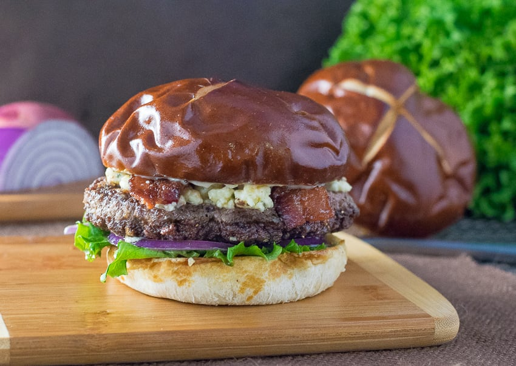

The Blue Cheese Burger

Am American classic, with a stinky twist
What's one food all Americans love? That's right. Burgers. Whats another things all
American's love? Cheese! And bacon for that matter. So here we took the stinkiest
cheese we could find, smashed it on a bacon burger and viola - the bleu burger!.
Ingredients:
- Pretzel bun
- Angus beef batty
- Bacon
- Crumbled bleu cheese
- Iceburg lettuce
- Red onion
- Tomato
- Best foods mayonaise (the only real mayo)
Steps:
- Cook up your patty to a nice medium rare
- As the burger is nearing completion, butter your buns and toss em on the
flat top to crisp them up
- Place two strips of bacon on top of the patty followed by a generous mound
of bleu cheese. Continue cooking until the cheese is just beginning to melt.
- When the buns are crispy, take em off the flat top and lather in mayonaise
- Add your patty with bacon and cheese, red onion, tomato, lettuce in that order
- Top off with the top half of the bun, and bite into that sucker! YUM!